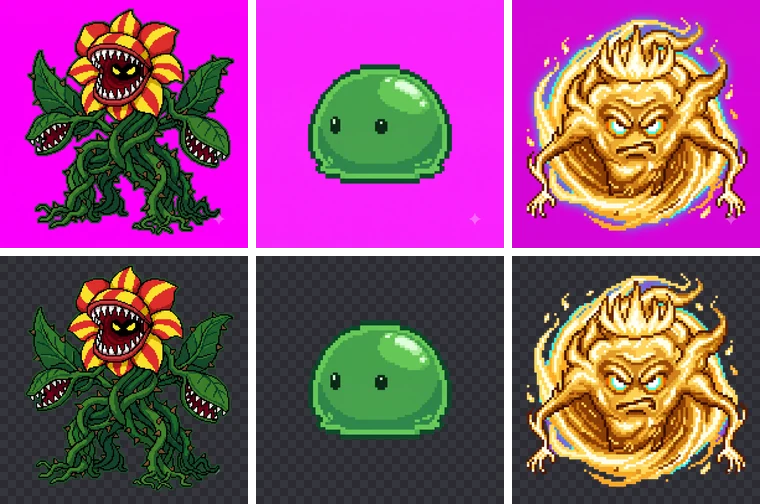

마젠타·크로마키 배경을 투명 PNG로 만들기
AI 이미지 생성기로 게임 스프라이트나 아이콘을 만들 때는 투명 배경이 바로 나오지 않습니다. 대신 마젠타나 초록 같은 단색 배경으로 만든 뒤, 그 색만 지우면 깔끔한 투명 PNG를 얻을 수 있습니다.
어떤 배경색으로 만들까요?
물체에 거의 없는 색을 고르는 것이 핵심입니다.
- 마젠타(#FF00FF): 빨강·파랑이 가득하고 초록이 0이라 캐릭터·소품에 거의 쓰이지 않습니다. 대부분의 경우 가장 무난합니다.
- 초록(#00FF00): 물체에 분홍·보라가 많을 때 고르세요.
- 파랑(#0000FF): 물체에 초록과 분홍이 모두 많을 때 쓸 수 있습니다.
프롬프트에는 “solid magenta (#FF00FF) background, no shadow, no gradient”처럼 그림자와 그라데이션이 없도록 적으면 결과가 더 깨끗합니다.
사용 방법
- BGPeel에 이미지나 폴더를 끌어다 놓습니다.
- 배경색과 배경 종류는 자동으로 잡힙니다. ‘변환 시작’을 누르세요.
- 결과를 체크무늬·검정·흰색 배경으로 바꿔 보며 확인한 뒤 zip으로 한 번에 받습니다.
실제 결과
나노바나나에 마젠타 배경을 지정해 만든 몬스터 세 장을 BGPeel 기본 설정으로 처리한 결과입니다. 요청한 색은 모두 #FF00FF였지만 실제 배경은 #FC01FB, #FA25FE, #D506D9로 조금씩 달랐고, 배경색 자동 감지가 이미지마다 그 색을 다시 재서 지웠습니다. 오른쪽 아래의 반짝이 마크도 배경과 함께 사라졌고, 식물 몬스터의 덩굴 사이처럼 물체에 둘러싸인 배경도 투명해졌습니다.

어떤 배경색이 가장 잘 지워지는지는 배경색 비교 실험에서 같은 캐릭터로 비교했습니다.
그냥 색만 지우는 것과 뭐가 다른가요?
이미지 편집기의 ‘자동 선택’으로 배경색만 지우면 물체 둘레에 분홍·초록 테두리가 남습니다. 가장자리 픽셀에 배경색이 반쯤 섞여 있기 때문입니다. BGPeel은 픽셀마다 배경이 섞인 정도를 재서 그만큼만 투명하게 하고, 섞인 배경색을 빼 원래 물체 색으로 되돌립니다. 배경에 붙은 빛번짐(글로우)도 함께 지울 수 있습니다.
결과가 아쉬울 때
물체 둘레에 배경색 선이 남거나 가장자리가 깎이면 도구 페이지 아래의 설정 가이드를 참고해 ‘세부 조절’ 값을 바꿔 보세요. 바꾼 뒤 아쉬운 카드만 골라 다시 변환할 수 있습니다.